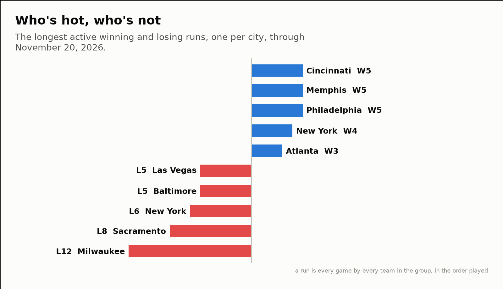

Cincinnati has won 5 straight. Milwaukee has lost 12 straight.
The longest active runs in every city, through November 20, 2026
- Hottest
- Cincinnati: Reds/Bengals — 5 straight wins since October 11, 2026, +34.8 weighted
- Coldest
- Milwaukee: Brewers/Bucks — 12 straight losses since October 28, 2026, -38.0 weighted
- How a run is counted
- Every game by every team in the group, in the order they were played. One loss by any of them ends it.
| Run | City | Teams in it | Since |
|---|---|---|---|
| W5 | Cincinnati | Bengals | October 11, 2026 |
| W5 | Memphis | Grizzlies | November 13, 2026 |
| W5 | Philadelphia | 76ers 3, Flyers 2 | November 15, 2026 |
| W4 | New York | Knicks 3, Rangers 1 | November 15, 2026 |
| W3 | Atlanta | Hawks | November 15, 2026 |
| L12 | Milwaukee | Bucks | October 28, 2026 |
| L8 | Sacramento | Kings | November 4, 2026 |
| L6 | New York | Nets 4, Jets 1, Devils 1 | November 14, 2026 |
| L5 | Baltimore | Ravens | October 18, 2026 |
| L5 | Las Vegas | Golden Knights 4, Raiders 1 | November 13, 2026 |
